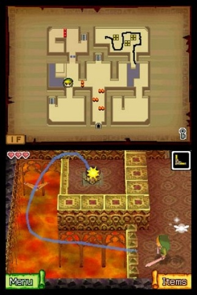

Legend of Zelda : The Phantom Hourglass

Nintendo, 2008
Nintendo spin off a fourteenth iteration of the familiar and oh-so-beloved franchise. I'd only previously played the preposterously-sub-titled Ocarina of Time on the N64, of which I retain fond, sepia-coloured memories.
I found Phantom Hourglass to be engaging, and played it to a thoroughly jolly completion over the course of a couple of months. The gameplay and plot are a tad more casual and lightweight than Ocarina, as befitting play snatched while on-the-go on the handheld platform.
Using the DS stylus to control Link is delightfully transparent and intuitive. Just as for a mouse, however, expert users will eventually eschew it for many actions, preferring the speed, precision and tactility of distinct physical buttons.
On the down side, some of the puzzles are downright contrived. After introducing a handy little map, on which you can scrawl notes and reminders for yourself, the game then promptly takes it away again for exactly the levels on which it would be of most use, proclaiming 'you can't use the map here, some sort of magic prevents it.' Right. Up yours.
Equally intrusive, the dialog is entirely Nintendo-esque cutesy Japanese schmultz, and it would have improved the game no end for it to have been entirely absent.
Such niggles are few and far between, though. Time for another go of the newfangled rating system.
Rating: Place yourself somewhere between...
10/10 if you're into a deftly executed handheld riff on the Zelda series, beautifully integrated with the affordances and sensibilities of the hosting hardware in that way that only Nintendo can do. Lots to love here.
0/10 if you're done with revisiting timeworn ideas, even ones as compelling and charming as this, and yearn for a resurgence in experimental originality to kick the gaming industry out of one or two ruts (such as having a blind spot for crappy dialog.)
Comments